Where it started
I had always enjoyed indoor RC cars and helicopters and me and my cousin wanted to get into larger outdoor RC planes, but they were very expensive for something that would be destroyed in a crash, which was inevitable when learning to fly.
This led to the discovery of Flite Test plane plans, where you would buy the raw material of foam board sheets and the electronics independently, to manufacture the plane yourself. You would print the scaled plane plans out on sheets of paper, pin them to the foam board and trace the lines, and then cut the foam board to create the separate components, or score the foam board for curvature or joints. The individual parts could then be moulded and set, before assembling and attaching them together, all with the use of a hot glue gun.
This meant that the cost for the airframe was really low and the electronics could be purchased independently, so in the event of a crash either the foam board could be repaired, or for more severe damage a whole part or new plane could be manufactured from scratch cheaply and without the need to purchase more electronics, just at the expense of time.
We manufactured and flew several different configurations of these aircraft, spanning from a conventional fuselage and wing with a front motor pulling, to a full wing with a rear motor pushing.
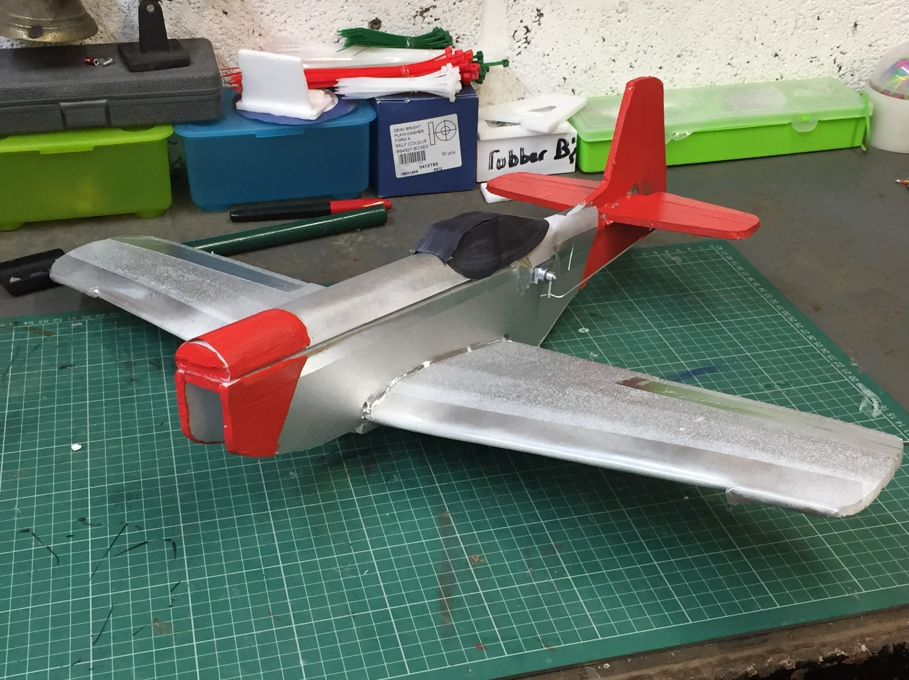
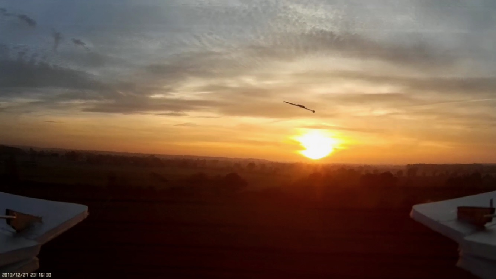
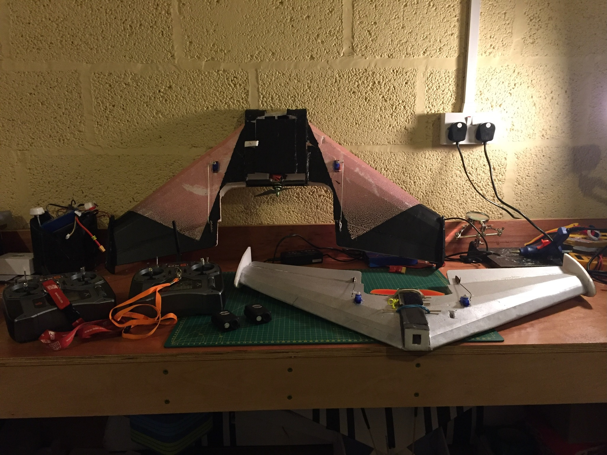
Discovery of First Person View (FPV) Flying
We were flying these planes line-of-sight, which limited us to flying in simple circle or figure-of-eight circuits relatively close, because as the plane got further away it became smaller to view and subsequently harder to control. We did have action cameras attached to the planes to capture footage, but trying to produce footage of the planes chasing each other was very difficult when flying line-of-sight.
This led to the discovery of First Person View (FPV) systems, which consist of an analogue camera connected to a video transmitter (VTX) with an antenna, which transmits to a video receiver (VRX) with an antenna, connected to a screen or goggles. So it is a live video feed with very low latency (which is why it is analogue, although newer technology systems run live HD footage).
As the wing configuration had the motor and propeller mounted on the rear, the FPV camera could be placed in the front of the plane and have an unobstructed view. Flying with this FPV system gave me more confidence to fly as I didn't have to deal with the roll and rudder controls being flipped when flying back towards me, or worry about losing sight of the plane in the sun, and so I could perform more complex circuits and manoeuvres.
Discovery of freestyle acro quadcopters
From being in the RC plane and FPV niche, I came across YouTube videos from the likes of JohnnyFPV, MrSteele and Rotor Riot. The footage was mesmerising and I was hooked, but also intrigued because I had only seen photography drones before, and so what was this type of drone performing these acrobatic maneuvers? Turns out these are acrobatic freestyle racing drones.
Although I enjoyed flying the RC planes and the introduction of the FPV system expanded capabilities from just flying in a simple circuit, the nature of manufacturing the planes ourselves to save money did have a few downsides. The process of creating the plane the first time was fun, but small errors during take off or landing, potentially from a gust of wind, would result in damage to the aircraft, which was very time consuming to repair and took away from time flying.
So based on enjoying flying the planes with the FPV system, being mesmerised by these FPV drones and experiencing the fragility of the foam board planes, I set out to build an FPV drone.
What I wanted to build
So I started researching more into what an FPV racing drone was. The general optimal formula is a high trust, low weight, manual acrobatic control, agile quadcopter. The combination of FPV flying and the acrobatic drones allows for the capability of really unique maneuvers and subsequent footage. The drone consists of a carbon fibre frame, 4 motors & propellers, 4 electronic speed controllers (ESCs), a flight controller, battery, camera, video transmitter (VTX) and antenna, radio receiver (RX) and antenna.
My First Build
The setup that the people making the videos were running was very expensive, and so for my first drone I set out to build one for as cheap as possible, just so I could experience flying these drones FPV and see if it was something I wanted to get more seriously into. To aid in this saving I used my current FPV system, radio transmitter and action camera.
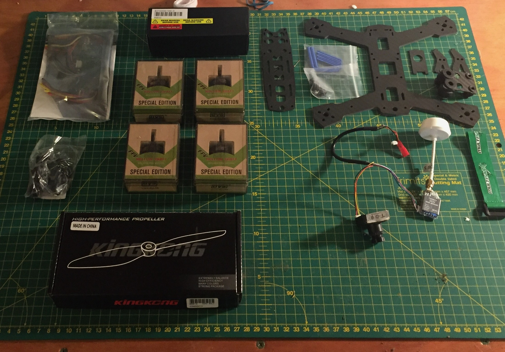
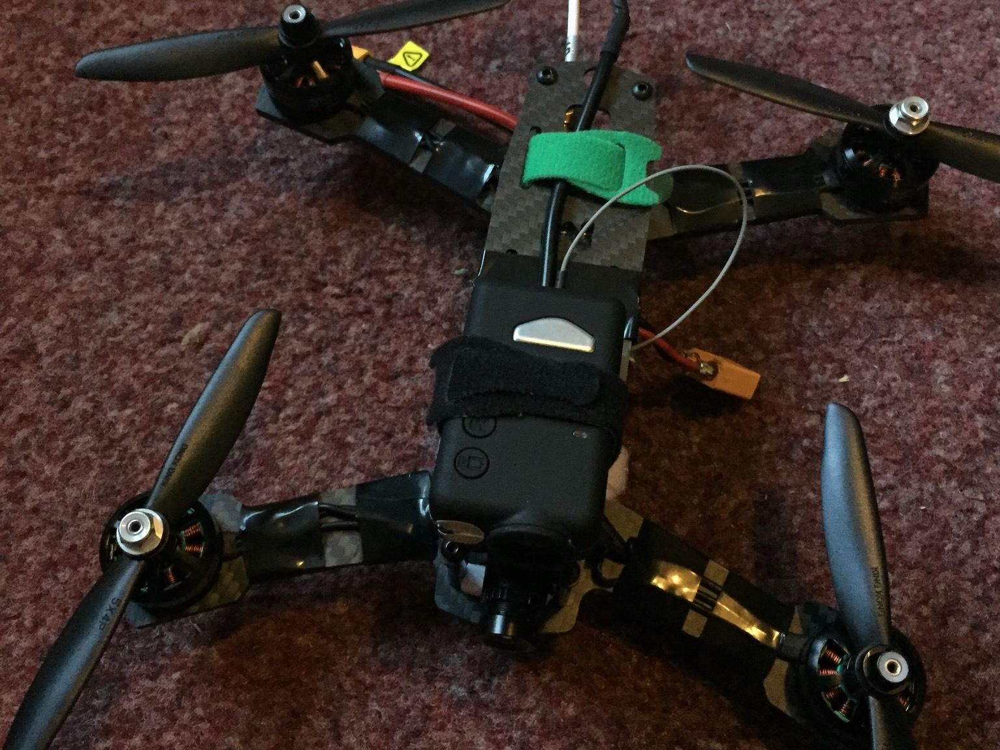
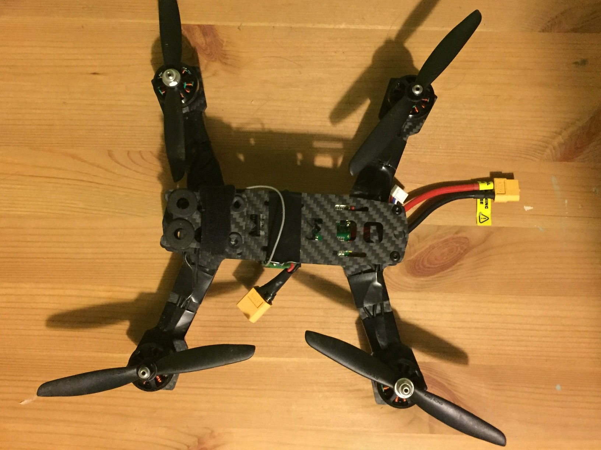
Frame: MRM 225 Motors: DYS SE 2205 2300kv ESCs Afro ESC 4in1 with built in CC3d FC Battery: Multistar 3s 65c Propellers KingKong Multirotor 4x5
There were some fundamental issues with this drone:
The FPV camera had a really low field of view, which was acceptable when flying the planes as you could launch and gain height flying line of sight, and then transition to using the FPV feed, but that wasn't viable for the drones, and so this made it really difficult to fly.
As shown in the picture the FPV system was independent of the flight controller, plugging directly into the battery for power, and so no on screen display (OSD) of important data such as battery voltage or radio signal strength was displayed to the goggles.
The goggles used a singular screen which had to be far enough away to see clearly, so they were bulky, uncomfortable, and had a lot of light leak.
The combination of a 3s battery and 2 blade propellers delivered enough power to fly, but the drone severely lacked performance in terms of acceleration, agility, and top speed.
Despite these issues the drone served its purpose, as I really enjoyed the experience of flying it using the FPV system and could see the potential in what these types of drones could offer compared to the planes. So I set a goal of building a second drone, with a higher budget now I knew I enjoyed flying them, that would aim to fix some of these fundamental issues. I started researching deeper into the exact specifications of components, to gain a better understanding of how differences in components affected drone performance.
Second Build
The fundamental issues with the first drone were the entire FPV system and a severe lack of thrust, and so along with upgrading the setup as a whole and having better quality components all round, these were the main factors I focused on improving.
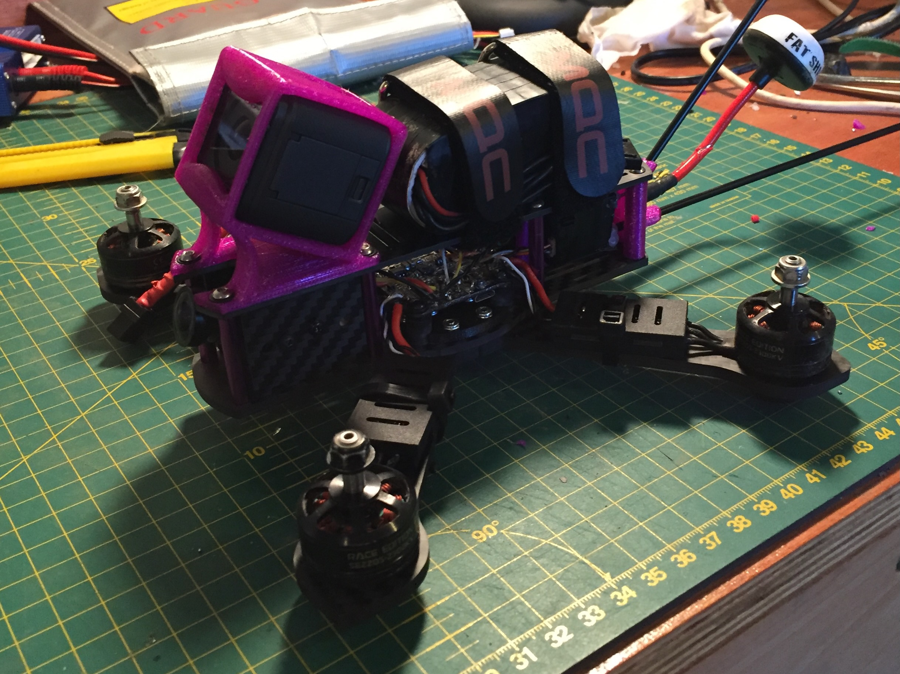
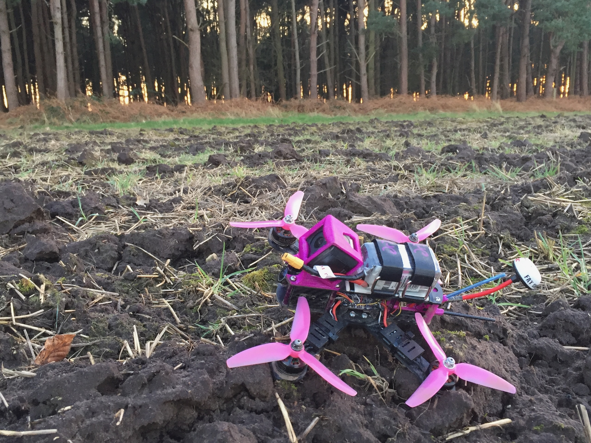
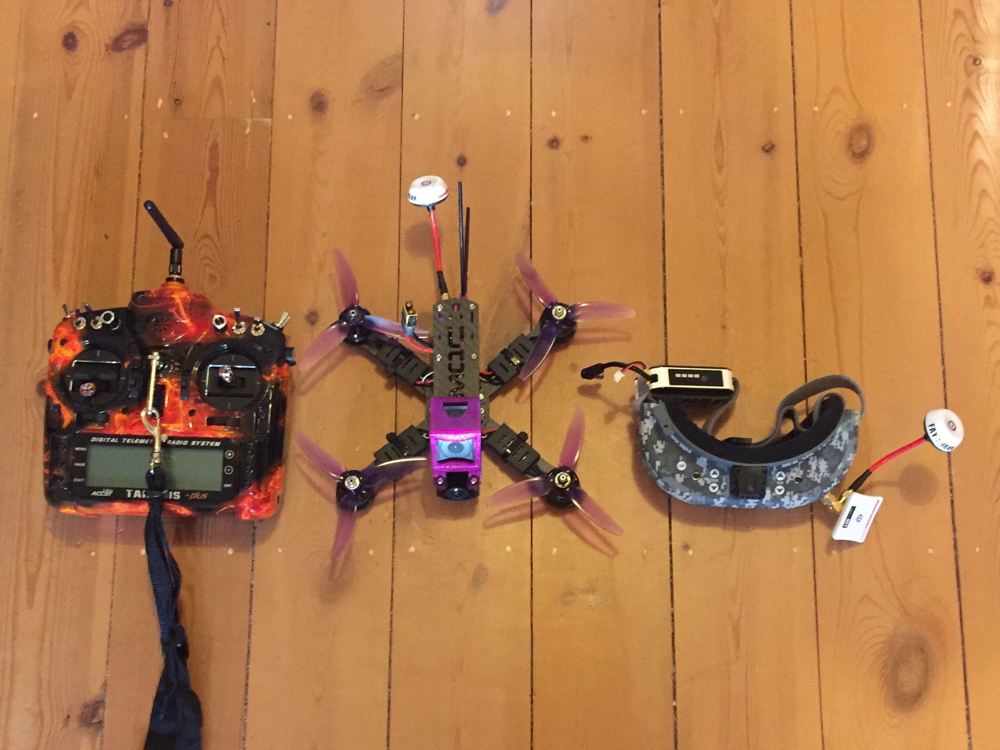
Frame: MQC Fusion Motors: DYS SE 2205 2300kv ESCs DYS XSD 30A FC DYS F4 Pro OSD Battery: TATTU 1550MAH 14.8V 4S 75C Propellers HQ 5x4.3x3
The FPV system needed an overhaul, and so I purchased some Fatshark Dominator HD2 goggles, which have 2 independent screens and diopters for each eye, providing a much better quality picture in a much smaller form factor. This allowed for both less eye and neck strain, and eliminated any light leak, allowing for a much more comfortable experience flying. The receiver they host also has two antenna connectors, allowing for the use of both an omni directional and directional antenna, which improved the range of video signal.
The transmitter side of the FPV system was also upgraded, with an analogue camera with a greater field of view, and a higher quality VTX with a new antenna, both of which were connected to the flight controller. This produced higher resolution footage with a larger field of view, over a longer range, and with an on-screen-display (OSD) providing crucial information such as battery voltage and transmitter signal strength.
As I had used my old radio transmitter for the first drone, and was upgrading the FPV system to be capable of much greater range, upgrading the radio control system was necessary. I purchased a FrSky Taranis X9D transmitter and FrSky R-XSR receiver. This improved the range of the radio control, and the higher quality gimbals allowed for smoother, more precise movements and control.
The frame from the first drone was upgraded to an MQC X-frame. Firstly the overall construction quality and design of this frame was much better, such as using 8 standoffs instead of 4, which gave more support to the top frame. The two carbon plates at the front provide mounting to the FPV camera. The shape is also an X-frame instead of a H-frame, which means all motors are equal distance from centre, so pitch and roll are similar, which is better for control. This X shape incorporates a bottom plate and separate arms opposed to one piece for all, which means a thinner main section can be used but still have thicker arms (with perfect grain alignment), to sustain durability for a component prone to breaking without adding unnecessary weight. The fact the arms are separate also allows for easier maintenance if one was to break, without the need for an entire new bottom section. The frame also came with a GoPro mount, and mounting for VTX antenna and receiver antennas at optimal angle separation, allowing them to stay in this position and provide maximum range.
Due to a lack of power and agility on the first drone, I upgraded to using 4s batteries and 3 blade propellers. The theoretical motor speed can be estimated from the motor's KV rating and applied voltage:
\[ RPM = K_V V \]
So using the same Kv motors but increasing the voltage from 11.1V to 14.8V increases the RPM of the motor, and changing from 2 blades to 3 blades means the same level of thrust will be achieved at lower RPM. So combining greater thrust at the same RPM with greater maximum RPM provided a substantial gain in thrust, which negated the increase in weight from the 4s battery and provided the acceleration, top speed and agility that was lacking in the first drone.
The slightly more compact spacing of this frame meant that the previous all-in-one flight controller and ESCs were not a viable option, and load tests with the motors using 3 blade propellers showed they drew more than 20amps, which is what the all-in-one ESCs were rated for. So I purchased 4 individual ESCs that were rated for 30A.
Another thing that was carried over from the planes for the first build was the mobius action camera, and so this was upgraded to a GoPro session 5. This provided much greater quality video, and the footage from this drone was the start of editing my own freestyle videos. The shorter form factor of the GoPro combined with the stronger support for the top plate allowed for the battery to be top mounted, which provides better handling for drones around this weight.
Overall the setup of this drone was performing great, with the main issues of the camera system and lack of thrust from the first drone being resolved. But I was still using the motors from my first drone, and after extensive use and crashes their performance was degrading. So I upgraded to a set of T-Motor F40 Pro IIs. Just having a new set of motors produced less vibrations, but they were also a higher Kv (2400 from 2300), and so provided higher RPMs and a higher thrust (1509g from 1155g).
I also upgraded to a TBS Triumph VTX antenna, due to damage to the fatshark one. These antennas have to be exposed to provide the best signal, but this makes them vulnerable in the event of a crash.
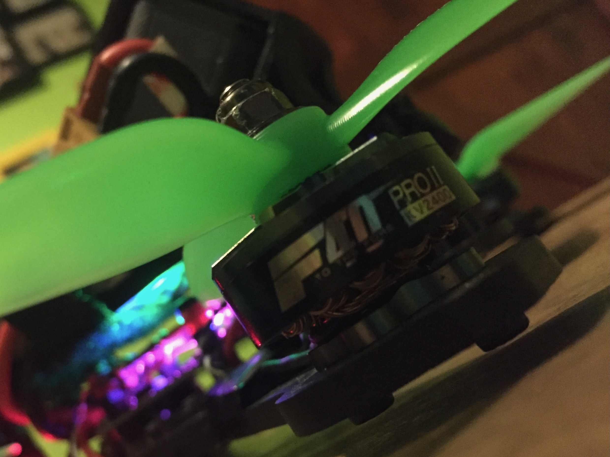
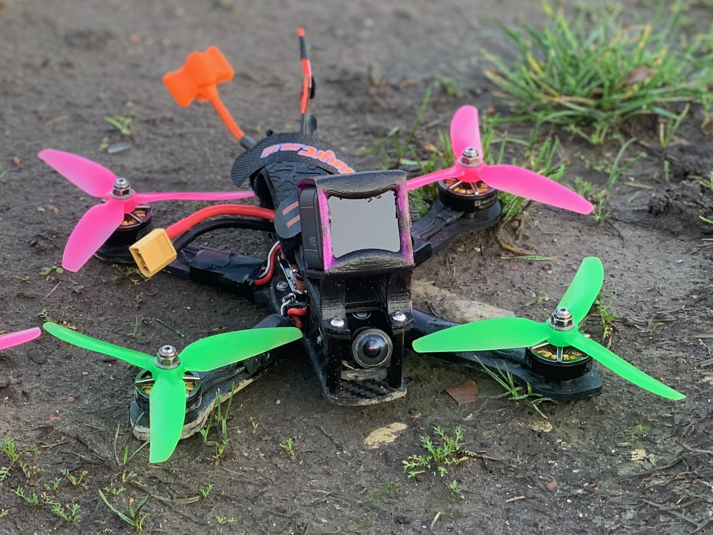

PID Control & Filtering
Now that I had advanced from the objective of building a working drone and learning the basics of flying, to flying around objects and filming HD footage, the smoothness and handling of the drone became very important. Of course the quality of components such as the frame and motors, as well as pilot inputs have a large impact on smoothness, but one of the main factors is the PID control tune and filtering of the flight controller. There are different brands of flight controllers, different softwares, and different software versions - so finding the right combination that gives the best performance while having the right feel is an ever present challenge. The DYS FC initially used on this build was running betaflight, but I then changed to a flightone FC running raceflight, then I changed to a Helio FC running butterflight.
The first video below was with the old motors and running betaflight on the DYS flight controller, and the second video was with the new motors and running butterflight on the Helio flight controller.
Racer Build
My freestyle build was going well, but in addition to freestyle videos I had seen videos of racing event series, where there would be multiple people racing around a course with dedicated racing versions of these acro drones. This inspired me and my cousin to each build a racing drone and race each other, and due to my upgrades I had an old set of motors and flight controller spare.
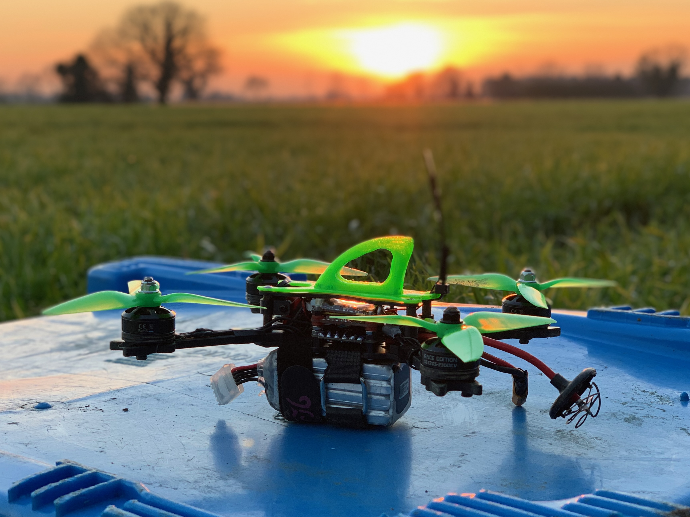
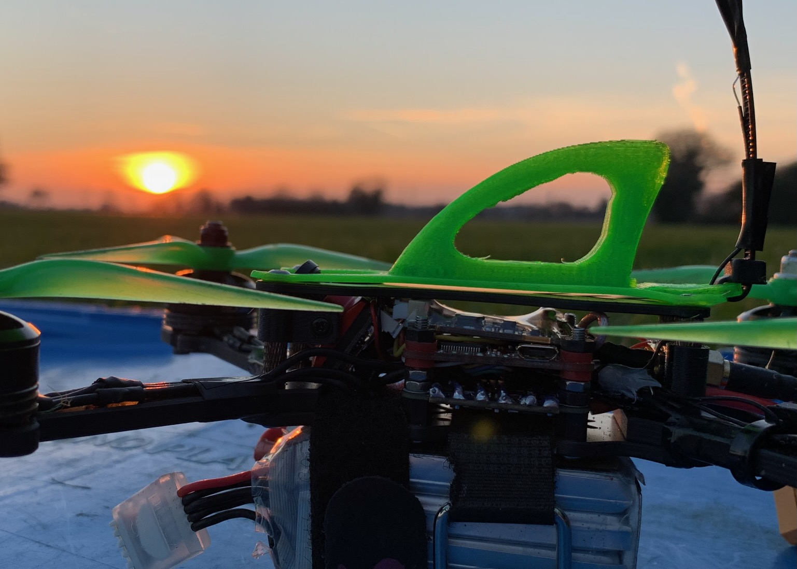
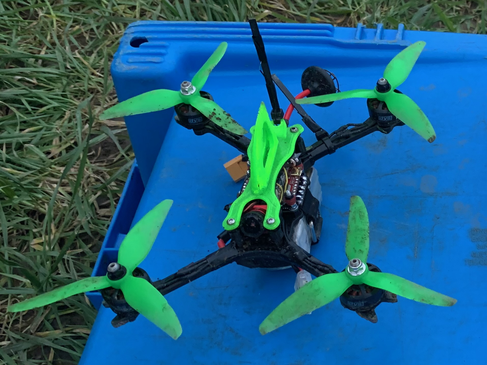
Frame: Mode 2 ghost Motors: DYS SE 2205 2300kv ESCs Spedix GS35 4 in 1 Esc 35A BLHeli 32 FC flightone Battery: TATTU 1550MAH 14.8V 4S 75C Propellers HQ 5x4.5x3
A racer drone has a fundamentally different objective to the acrobatic freestyle drones, which is to be as fast and agile as possible. Depending on the size of the course this might not be just top speed, but more about acceleration and direction changes.
To achieve this performance having a high thrust-to-weight ratio is important, but as I was using my old motors this wasn't going to improve thrust, and so the main focus was on weight reduction.
A lot of components of the drone are essential for it to function, but one of the components which isn't is the GoPro. As the objective was to race instead of filming HD footage, not only could the GoPro be removed, but the mount could be removed, and a smaller frame could be used as there didn't need to be space to mount the GoPro.
A standard freestyle frame has an elongated middle section, which provides space on the top plate to mount a GoPro on the front and the battery behind that, but this means there is both an elongated top plate and bottom plate, and they require 8 standoffs to support them, which accounts for a lot of weight. As there is no need to mount a GoPro, and it's better to bottom mount the battery on a lighter drone, a racing drone frame has a much shorter middle section, a much thinner top plate, and less standoffs.
So a frame like this specifically designed for racing was chosen, which had a very short middle section and very thin width arms, so it was much lighter than the typical freestyle frame. Due to the arms and also for additional weight saving I chose a 4-in-1 ESC, which could be mounted on the same stack as the flight controller and minimise the amount of hardware used. The shortness of the middle section meant there was much less space for the analogue camera in the front, so a micro sized camera was chosen.
Significantly reducing the weight of the drone took a large amount of load off the motors, which combined with the lower pitched propellers typically used on the freestyle drones meant the drone was incredibly responsive in low end acceleration but lacked control in cornering. Reducing the load from weight saving gave some overhead on the motors, so I experimented with higher pitched propellers that give more top end speed and more control in cornering at the expense of a higher resistance on the motor.
Third freestyle Build
The second freestyle drone was a monumental improvement from the first, but having improved my piloting skills through extensive flying and also experiencing the speed of the racing drone, I wanted to push the performance of a freestyle drone.
To improve speed and agility a key factor is thrust-to-weight ratio, and for the racer I was able to drastically reduce weight due to the smaller frame and removal of the GoPro, but for my freestyle build I still wanted to have that larger sized frame to carry a GoPro. So unable to just cut weight drastically, I needed to try to cut weight, but also increase thrust.
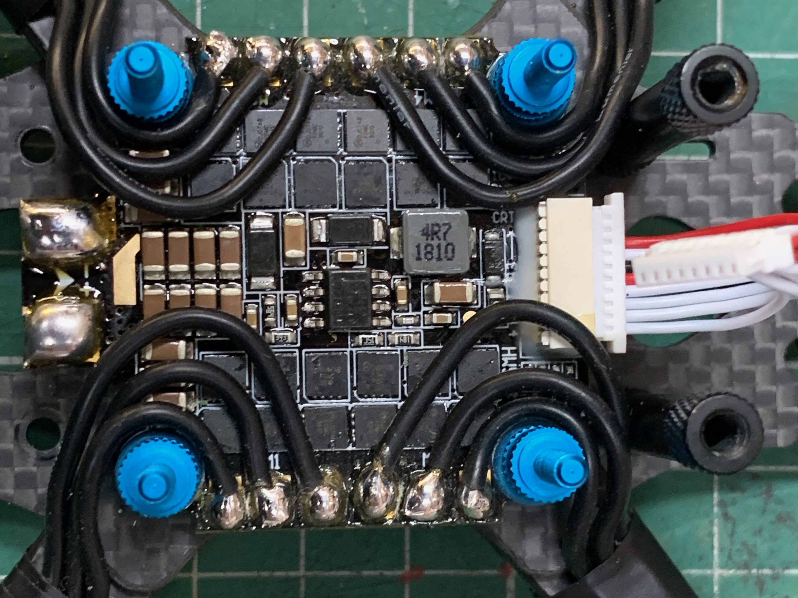

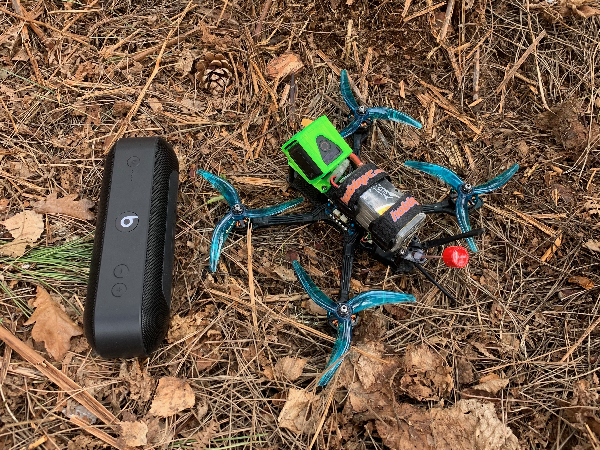
Frame: AstroX X5 Johnnyfpv edition Motors: Lumenier 2207 2700kv Johnnyfpv V2 ESCs Hobbywing XRotor Micro 60A 4in1 FC Flightone RevoltOSD Battery: TATTU 1550MAH 14.8V 4S 75C Propellers Ethix S5 5x4x3 / Azure 4.8x3.8x3
To increase thrust I upgraded to a set of 2207 2700kv motors. As explained before, a higher Kv motor results in a higher rpm at the same voltage, so increasing from 2400Kv to 2700Kv provided more thrust.
A wider stator (23 compared to 22) gives the magnetic force more leverage over the motor bell, resulting in highly granular control on the bottom 25-50% of throttle. That made micro adjustments easy and helped me gain confidence flying lower to the ground on the previous build.
A taller stator (07 compared to 06) allows for taller magnets which provide the motor the torque needed to spool up faster from aggressive throttle changes, resulting in snappy responsiveness and explosive peak power. So now that I had gained confidence flying lower and wanted to incorporate more snappy moves experienced from the racer in my freestyle flying, a 2207 motor was better suited.
Similarly to the racer build, as there is kind of a minimum weight due to the necessity of some components, one of the main ways to reduce weight is by using a lighter frame. But as stated above, I couldn't select a racer frame because I still wanted to be able to mount a GoPro, and so I researched different frames to find a lighter freestyle one.
The frame still had the same elongated middle section of a freestyle drone, but was lighter from utilising thinner depth bottom and top plates, much thinner width arms, and generally being a more compact design. The way in which the drone was designed meant that it used less hardware, and the choice of material in the hardware and mounts was lighter, for example the rear standoffs were moulded plastic, which housed a moulded antenna mount, compared to the large 3D printed one on the previous frame.
Increasing the RPM of the motor means the propeller is going to be spun round faster, which creates more resistance and requires more torque to combat this. However, Kv (speed per Volt) and Kt (torque per Amp) are inverses of each other. So not only does a higher Kv motor require more torque to overcome the increased resistance, it requires more Amps per unit of torque. This massively increases the current draw of the motors, so I upgraded to a 60 Amp ESC. I chose a 4-in-1 ESC because I was impressed by this form factor on the racer build which also had thinner width arms, and its compact design also aids in weight saving.
3D Printed GoPro mounts
The second frame came with a 3D printed GoPro mount, but this frame had a moulded mount that didn't provide as much protection and was at a different angle to what I used for my analogue camera. And I also wanted to start using ND filters to improve the footage, but due to the form factor of the GoPro session the ND filters couldn't click onto the front, and so the only options were ones that stuck on, but then you could only ever use one strength of filter, or glass ones, but they needed some way to be attached.
So I worked with my cousin on designing and developing a 3D printed mount to solve these issues. I helped with the practical side of the process, including testing the mounts during flying and identifying issues with the fit, strength, vibration and camera view, which were then fed back into the design.
There were a few constraints to work around. The mount had to line up with the existing screw holes in the frame, as it attached through slots in the frame and into the existing standoffs. It also needed to be kept as light as possible without becoming too fragile.
The mount was split into three main sections. The first was the flat base that attached to the frame, following the shape and screw positions of the front section of the top frame. The second held the GoPro at the chosen angle, while leaving enough access to the buttons and screen and allowing the camera to be slid in and out. The third section formed a wedge between the base and the GoPro section, providing the support needed to hold the camera at the required angle.
We inevitably ran into issues with the first versions. The borders around the front were either too narrow, becoming flimsy and not holding the GoPro in place, or they were too thick, supporting the GoPro but intruding into the video. The stiffness of the mount was either too flexible, causing the GoPro to move around under the loads of the flight, or too rigid, with the mount breaking from a hard impact. There was also the issue that when choosing to lower the angle of the GoPro, the gap between the front screw holes and the bottom of the GoPro section was decreased, which made it really difficult to access them. Additionally, the depth of the GoPro section was either too large, not holding the GoPro and ND filter in securely, or too small, putting lots of strain on the mount.
The shape of the border design was iterated to gain additional thickness in areas that wouldn't be in frame, to ensure the mount held the GoPro securely while not intruding into the video. Different materials and infill combinations were experimented with to find a balance between rigidity and durability. Additionally, holes were added to the bottom of the GoPro section to allow access for allen key to the screws.
Trend from 4s to 6s batteries (and failed test)
I flew this drone for an extensive period of time, and felt like the design was pretty refined for freestyle flying. The frame was on the lighter end of those of that form factor, the 2700Kv motors were really smooth and the Kv was at the top end of performance. I had experimented with different propellers, to find ones with the best balance of lightness, agility, top speed and durability. The GoPro session 5 was the lightest of the available action cameras to provide quality HD footage. And so the build was at a nice spot for freestyle flying.
But as time went on, there was a general trend in the industry from using 4s to 6s batteries. For the main reason of less battery sag. Battery sag is when at high current draw, the internal resistance of the battery causes voltage to drop, causing a temporary loss of performance (lower RPM/thrust) that recovers when throttle is reduced. This limits long periods of high throttle maneuvers and near the end of the flight (when the voltage is already low), the voltage can suddenly fall off a cliff, often resulting in a crash.
The relationship between electrical power, voltage and current is:
\[ P = VI \]
So using a higher voltage battery will provide the same power at a lower current, which significantly reduces battery sag, and as the starting voltage is higher, a temporary drop in voltage will feel less noticeable on performance even if the battery starts to sag. Both of these mean 6s batteries allow for more sustained periods of high throttle, provide better recovery from dives, and provide more consistent performance throughout the entire flight.
The theoretical motor speed can be estimated from the motor's KV rating and applied voltage:
\[ RPM = K_V V \]
So because 6s is a higher voltage you need to have lower Kv motors to achieve the same RPM.
My cousin had a 6s battery, and so to test out using 6s batteries before buying new motors, I used a setting on the flight controller that could effectively limit the Kv of the current motors. However, I hadn't accounted for the increased energy spikes, and so at low throttle the drone flew fine, but at higher throttle the voltage spikes exceeded what the capacitor was capable of absorbing, which fried the MOSFETs on the ESC. Due to the higher voltage of 6s, and the larger energy spikes and harsher electrical noise, both the voltage rating and capacitance of the capacitor needs to be increased.
From theoretical advantages, online reviews and videos, and the testing I had managed to do, I was impressed by 6s batteries. So I bought a new ESC, a higher voltage and capacitance capacitor, and a few 6s batteries. The flight controller setting to limit the motor KV was working smoothly, so I didn't need to purchase new motors.
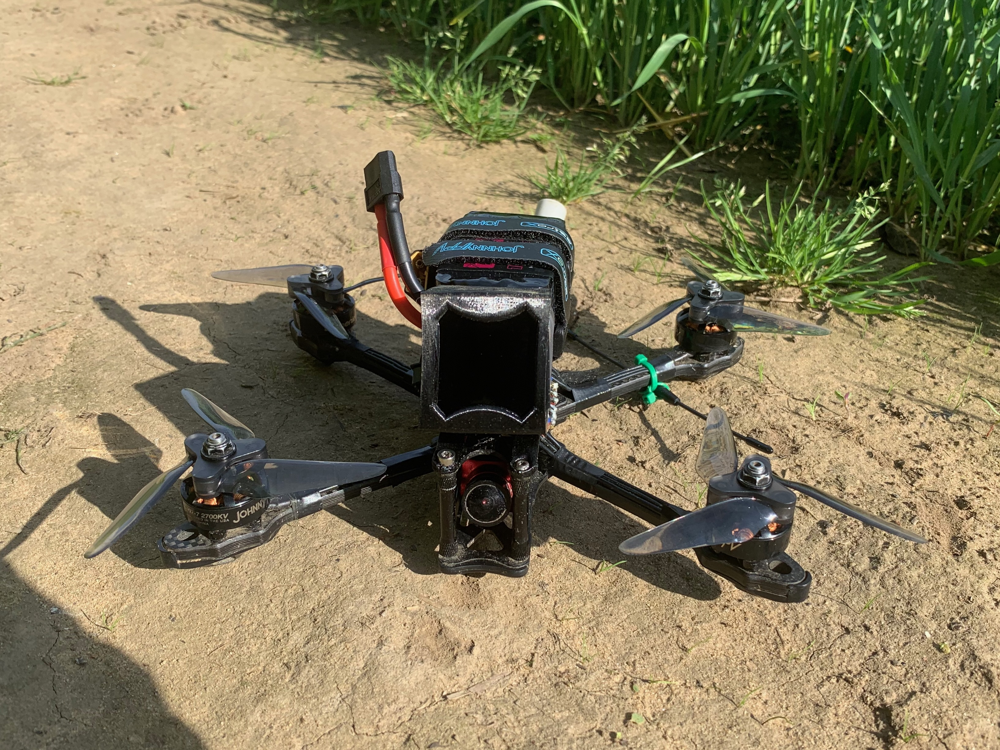
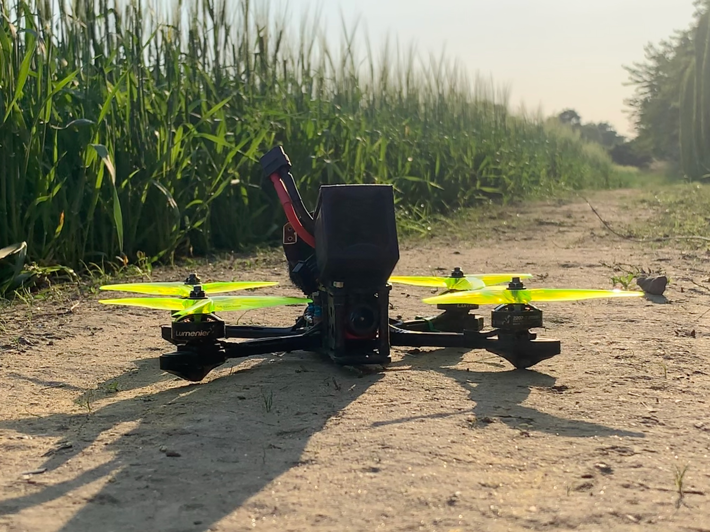
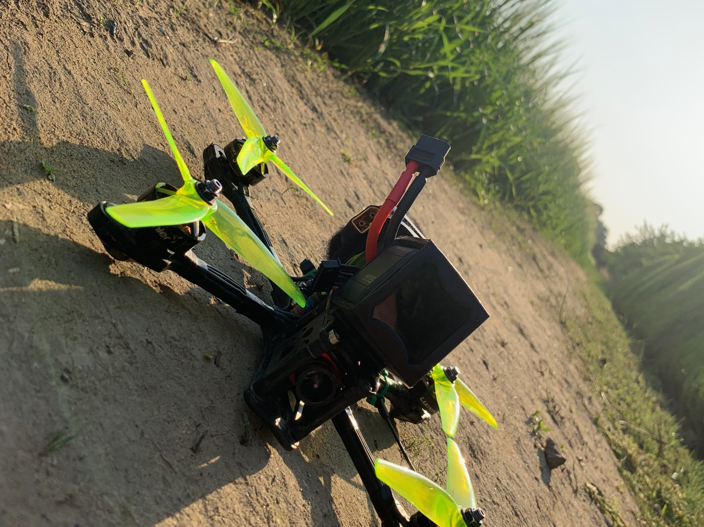
Fourth freestyle Build (new frame)
Then the upgrade to using 6s was another leap in performance, enabling larger dives and longer periods of high throttle flying.
But although performance was improved, the build wasn't fundamentally designed around using these new components. The only components still being used from the initial design were the FPV camera and flight controller. The 6s batteries were larger and heavier than the 4s ones, the new capacitors were larger, and the new VTX was larger. This meant that the layout of the components in the rear was messy, and there were concerns about the strength of the top plate.
This highlighted a design choice that needs to be made. Do you try to optimise purely around weight saving, or also factor in things such as ease of use and durability? For example the previous frame's rear section tapered in, which saved weight, but made it really difficult to secure the VTX, RX and capacitor.
So I decided to put all of the components on a new frame, which was slightly larger. Two main parts of this were the increased space in the rear section, to more securely mount the VTX, RX and capacitor, and a larger top plate, for more secure mounting of the battery. The frame also has specific slots to mount capacitors, more durable front standoffs, a raised plate to reduce oscillations to the GoPro, and a split bottom plate which allows for easier replacement of arms.
So the design choice I made was to not purely optimise for weight, in order to have a securely mounted, durable setup, for smooth flying and video footage. There is also a case that depending on the flying style you want to have, a heavier drone will carry more momentum when off power, and so if this is advantageous there is no trade off to a heavier build. But if I also wanted a really lightweight build, the vision was to put a new set of really smooth motors on this heavier rig, and then use the previous frame and current motors to build a lightweight 6s drone.
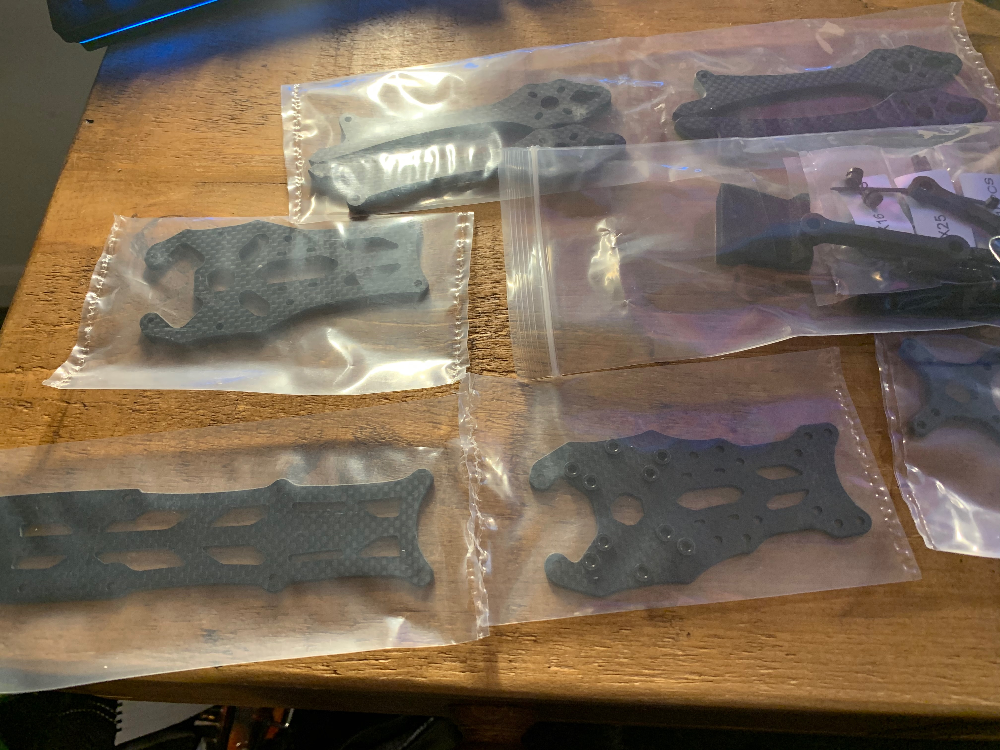
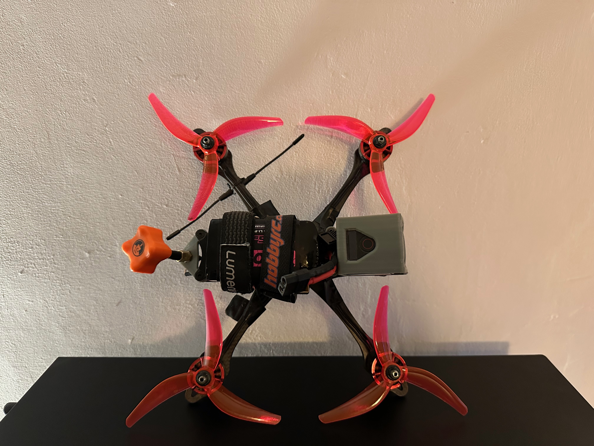
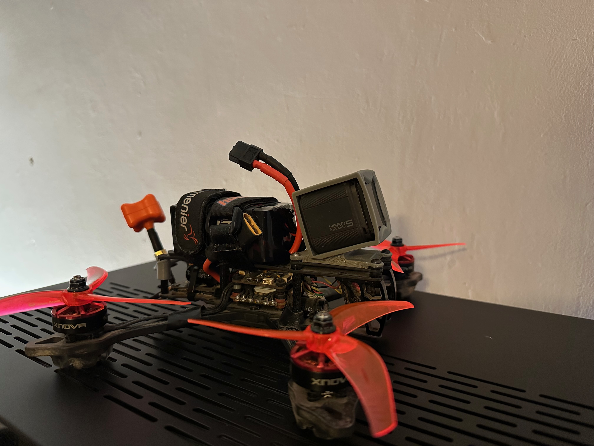
Lessons from extensive flight testing
One thing that is inevitable from flying FPV drones, is crashing. Now if a crash happens in an environment that is visible and easily accessible, you can usually see the drone (or are told by the spotter), and walk right over to it. But sometimes a crash happens where the drone isn't visible or easily accessible, for example in a crop. If the battery has been disconnected, then there is not much that can help locate the drone other than the spotter, or watching recorded analogue footage to take more notice of the surroundings. But if the battery is still connected, there are a couple of things that can be done.
If you have a video signal, the video receiver on the goggles uses both an omni directional antenna, and a directional antenna. So you can unscrew the omnidirectional one, so whatever direction gives the best signal, is the direction of the drone. The signal quality can be gauged by either static, or the receiver indicates percentage signal strength.
Similarly, if you have a radio signal, the antenna used on the TBS Crossfire radio module is directional, and this module indicates signal strength. So a combination of scanning directional antennas for both the video and radio systems, to find the strongest signal, can help locate the drone.
If you have a radio signal you can also arm the drone for a split second, and it will make a noise, but this is only helpful when you are within close proximity to the drone, to locate it exactly.
Read about my other project
Terramechanics Tyre Model
My Final Year Project which first explored off-road terrains response to forces. Based on understanding this relationship, I implemented this phenomena into a tyre-terrain model.